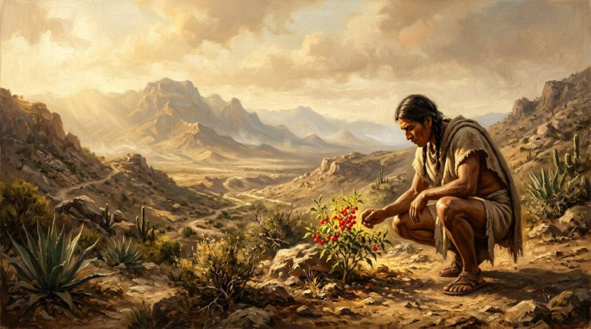

Five hundred years ago, not a single person in Asia, Africa, or Europe had ever tasted one. Today, over two billion people eat chili every day.

Somewhere around 6,000 years ago, in a dry cave valley in what is now central Mexico, someone put a small red berry in their mouth. Their eyes watered. Their tongue went on fire. Their nose ran.
And then they did it again.
That moment — which no one recorded, no one named, and no one remembers — may be the most consequential act of culinary courage in human history. The tiny fruit they tasted was Capsicum annuum. We call it the chili pepper. And before it was done, it would reshape the kitchens of every civilization on Earth.
This is not a story about a spice. It is a story about revolution — slow, silent, and absolutely unstoppable.
Key Takeaways
- Archaeological evidence places chili cultivation in Mexico’s Tehuacán Valley at least 6,000 years ago, making it older than many ancient civilizations.
- Not a single person outside the Americas had tasted chili before Christopher Columbus arrived in the Caribbean in 1492.
- Portuguese sailor Pedro Álvares Cabral brought chili seeds to India on Christmas Eve, 1500 — the night that changed Asian cooking forever.
- The first written Chinese record of chili (1591) describes it as a decorative plant — the elite refused to eat it for decades.
- Chili’s adoption by Hunan’s poor mountain communities directly shaped Mao Zedong’s politics — and, through him, modern China.
- In 2021, the Nobel Prize in Physiology was awarded partly because of research into the TRPV1 receptor — discovered using capsaicin as the key research tool.
- The global hot sauce market was valued at over USD 4 billion in 2024 and is expected to nearly triple by 2034.
The Secret Life of a Mexican Valley, 6,000 Years Before Anyone Noticed
The Tehuacán Valley in the state of Puebla, Mexico, is not the most dramatic landscape on Earth. Dry mountains. Sparse scrub. A sky that goes on forever. It is the kind of place history forgets.
But inside the dry caves of that valley — particularly a site called Coxcatlán Cave — archaeologists have found the earliest confirmed physical evidence of chili pepper use in the world. Wild chili harvesting appears in the cave record going back roughly 8,000 years. By around 6,000 years ago, people were actively cultivating and domesticating the plant (see Source #1). That is older than the construction of Stonehenge. Older than the first Egyptian pyramid. Older than the invention of writing.
The people of the Tehuacán Valley were among the earliest farmers in the Americas. They grew maize, beans, and squash — what later cultures would call the “Three Sisters.” But in their gardens, something wild also grew. A small bush. Soft green leaves. Tiny bright-red berries that birds loved.
Birds can eat chili with no pain at all. Capsaicin — the molecule that makes chili hot — targets the TRPV1 receptor, a pain sensor found in mammals. Birds have a different version of this receptor. They feel nothing. So birds ate the fruit, flew away, and spread the seeds across hundreds of miles. The chili had been using birds as its personal delivery fleet for millions of years before any human interfered.
Then a human interfered.
The detail most historians overlook is that domestication here was an act of affection, not just agriculture. The early farmers of central Mexico did not just tolerate the burn — they cultivated it deliberately, selecting the hottest plants, the most productive ones, the ones that fit best into their cooking. Over hundreds of generations, a wild roadside berry became a kitchen treasure. By the time the Aztec empire rose to power, chili was not just food. It was infrastructure.
The Aztecs called it chīlli in their language, Nahuatl — the direct ancestor of the English word we use today. Chili appeared in tribute lists: conquered peoples paid their taxes to the empire in dried chilies, collected at the great market of Tlatelolco. Chili was used medicinally — smoked over fires to punish or purify; applied topically to ease pain; given to soldiers before battle. Most famously of all, it was stirred into xocolātl, the bitter cacao drink consumed by the elite.
The first chocolate drink in history was cold, bitter, and spiced with chili. The idea of “hot chocolate” would have seemed bizarre to an Aztec king. It’s almost funny how completely we’ve inverted the original formula — sweet, warm, and mild where it was once bitter, cold, and fiery.
The World Before Chili: A Planet Desperate for Spice
It is difficult, looking back, to fully grasp how desperately the old world craved flavour. Not just wanted — desperately craved, in an almost economic sense.
Black pepper from India was called “black gold.” A single pound of it could pay a month’s rent in medieval England. Arab and Venetian traders controlled the overland spice routes from Asia to Europe, taking enormous cuts along the way. When black pepper finally reached a French or German kitchen, it had crossed deserts, seas, and the hands of a dozen middlemen. For most people, spice was out of reach entirely.
That hunger was the engine that launched the age of exploration. When Columbus set sail from Spain in 1492, he was not looking for new continents. He was trying to find a shorter path to India — to break the Arab monopoly on pepper and spices. He was funded by the Spanish crown specifically to find a cheaper route to black gold.
He found something else entirely.
In the Caribbean, Columbus encountered the local people eating a small red fruit that produced a burning heat on the tongue, not entirely unlike pepper. He was so wedded to his original mission that he called it pimiento — “pepper” — even though it bore no botanical relationship to black pepper whatsoever. He even called the islands the “Indies” and the people “Indians.” The names were wrong on every count. But names stick, and so we still call them chili peppers today.
What’s striking here is what Columbus didn’t do. He brought samples back to Spain but treated the chili as a curiosity, not a discovery. It was the ship’s doctor, Diego Álvarez Chanca, who wrote the first substantive European account of chili pepper in 1493. Chanca noted that the local people used it “like salt” — meaning it was fundamental, daily, non-negotiable. Columbus had his eyes set on silk and spices. Chanca noticed the food.
Europe, slow as always with uncomfortable truths, put the chili in a garden pot and admired its red color. Spanish monks grew it as an ornamental plant for years before someone thought to taste it.
A Christmas Eve in Kochi, and the Night Asia Changed Forever
Here is where the story accelerates.
Spain discovered chili. But Spain was not the great maritime empire of the 16th century — that was Portugal, its smaller neighbor with a talent for navigation and an obsession with trade dominance.
The Portuguese had a critical insight about chili that Spain missed: it could be dried. Tomatoes rot. Meat spoils. But a dried chili loses its water and almost none of its soul — the color stays, the fire stays, the flavor stays. You could pack a bag of dried chilies into a ship’s hold and carry it for months across any ocean without refrigeration, without spoilage, for almost no cost.
In 1497, Vasco da Gama became the first European to sail around the southern tip of Africa and across the Indian Ocean to India — opening a direct sea route that bypassed the Arab middlemen entirely. Portugal’s dominance of Asian trade was about to begin.
Three years later, in 1500, a fleet of 13 ships under Pedro Álvares Cabral was supposed to follow da Gama’s route to India. The wind had other plans. Blown far west across the Atlantic, Cabral’s ships touched the coast of what is now Brazil — he claimed it for Portugal and sailed on.
He arrived at the port city of Kochi on the southwest coast of India on December 24, 1500. Christmas Eve.
In the hold of his ships, among trade goods gathered from Brazil, were seeds of Capsicum frutescens — a variety different from the one Columbus had brought to Spain. That night, in the warm coastal air of Kochi, those seeds touched Asian soil for the first time in history.

It is an understated miracle. Within 30 years of that Christmas Eve arrival, chili was growing all along India’s west coast. Indian cooks, who already used black pepper and ginger for heat, discovered that chili was different in kind — cheap, easy to grow, and capable of a deep, layered burn that transformed every dish it touched. [INTERNAL LINK: the history of black pepper → /history-of-black-pepper]
The same pattern repeated across Asia. Portuguese traders arrived in Thailand. The Thai people declined to adopt their religion. They kept the chili. In Korea, chili arrived in the late 1500s — and within a generation, it had transformed kimchi from a white fermented vegetable into the vivid red dish we know today. Before chili reached Korea, kimchi was pale and mild. The red kimchi of today is barely 400 years old.
The evidence is thin for the exact year-by-year spread across each country, and scholars debate the precise routes. But the broad pattern is clear: within 50 years of Columbus, a fruit that had never existed outside the Americas was being grown on four continents.
The Food of the Poor and the Fuel of the Revolution
Not every culture embraced chili equally — and the reasons why are as much about class as about taste.
When chili reached China, the first written record dates to 1591: a playwright named Gao Lian, living near what is now Shanghai, mentioned the plant in a gardening text. He found it attractive. Decorative. Not particularly interesting as a food (see Source #6 / National Geographic).
The great cities of China — Beijing, Nanjing, Canton — belonged to a Confucian elite who prized delicacy, refinement, and culinary restraint. Chili was loud. Chili was rough. Chili was the food of foreigners and laborers. For the court cuisine of the Ming and Qing dynasties, chili was beneath consideration.
So chili went to the mountains.
To Hunan. To Sichuan. To Yunnan and Guizhou — the cold, wet, poor provinces where salt was expensive and meat was rare. Mountain farmers discovered that chili kept them warm in winter, made plain rice taste alive, and cost almost nothing to grow. By 1765, local historians in Hunan noted that chili was used to flavor sauces, vinegar, oils, and preserved vegetables — it had become, as one 18th-century chronicler wrote, “as indispensable as onion and garlic” (see Source #7, Brian Dott).
The villain of this story isn’t who you’d expect. It isn’t the Portuguese colonizers or the Aztec priests. It’s the Chinese elite — who had the fruit, dismissed it as peasant food, and accidentally handed one of history’s most powerful ingredients to the people who would eventually use it to reshape the nation.
When Mao Zedong rose from Hunan in the 1920s, he brought chili with him as symbol as much as sustenance. His Soviet military adviser, Otto Braun, recalled in his memoirs how Mao mocked those who couldn’t handle the heat. According to Braun’s account, Mao declared: “The food of the true revolutionary is the red pepper. And he who cannot endure red peppers is also unable to fight.”
It was not mere bravado. The Communist base areas were in the spice-loving interior provinces. The Long March passed through Sichuan and Hunan country. The cuisine of the revolution was chili cuisine. When Mao took power in 1949, the food of the mountain poor became, symbolically, the food of the nation. Sichuan hot pot. Hunan braised pork. La Zi Ji, the “spicy chicken” that captures Sichuan’s fire. These dishes conquered China’s cities in the late 20th century, carried there by waves of rural migrants who brought their kitchens with them.
There is a quiet irony in the fact that the dish the Qing court dismissed as peasant food is now served in every Chinese restaurant on Earth.
The Molecule That Fools a Brain, and the Nobel Prize It Inspired
The burn you feel when you eat chili is not real.
That sentence requires some unpacking.
Capsaicin — the chemical responsible for chili’s heat — works by binding to a pain receptor in your mouth called TRPV1. This receptor normally responds to genuinely dangerous heat, roughly above 43°C (109°F). When capsaicin binds to it, the receptor fires as if your mouth were actually burning. But there is no heat. There is no damage. Your mouth is not on fire. Your brain is being comprehensively fooled (see Source #2).
The brain responds as it always does to pain: it releases endorphins — natural opioid-like chemicals — to suppress the signal. It also releases dopamine into the brain’s reward circuit. The result is the “spicy high” — a genuine, measurable wave of euphoria that follows the burn. This is why people go back for more. This is why eating chili feels, as the psychologist Paul Rozin described it, like “a constrained risk” — the thrill of danger with none of the actual harm.
What capsaicin’s mechanism did for science is remarkable. In 1997, Dr. David Julius at the University of California San Francisco used capsaicin as a research tool to locate and identify the TRPV1 receptor — the first temperature-sensing receptor ever found in the human nervous system. That discovery cascaded into an entire field of pain biology. Julius went on to identify the receptors for cold, for the burn of wasabi, and for mechanical pressure.
In 2021, David Julius shared the Nobel Prize in Physiology for this work — work that began, essentially, because a scientist asked what was happening in the mouth when someone ate a chili pepper (see Source #3). The fruit from a Mexican valley had, 6,000 years later, helped unlock one of the fundamental mysteries of human biology.
There is also the question of birds. Capsaicin exists precisely because it works on mammalian TRPV1 — mammals avoid the burn and leave the fruit alone. Birds, with their different receptor structure, feel nothing. They eat the fruit and disperse the seeds. The chili evolved capsaicin not to hurt humans but to use birds as a delivery system. The fact that humans turned around and turned capsaicin into a pharmacological research tool worth a Nobel Prize is the kind of biological surprise that is very difficult to script.
Europe Took the Fire Out on Purpose
Here is the most counterintuitive chapter in the chili story.
Spain and Portugal carried chili from the Americas to the world. European missionaries, monks, and sailors introduced it to India, China, Korea, Africa, and beyond. And then, collectively, most of Europe said: no thank you.
It is not quite accurate to say Europeans rejected chili — some countries embraced it enthusiastically. Hungary transformed chili into paprika, grinding the dried red fruit into the powder that now defines goulash and Hungarian sausage. By 1569, paprika was already recorded as a Hungarian staple. Spain itself developed a mild smoked paprika (pimentón) that became fundamental to chorizo and paella.
But in France, Germany, Britain, and the north of the continent, chili was considered rough, peasant, foreign. Polite kitchens did not use it.
So European farmers did something extraordinary: they bred the heat out.
Year after year, generation after generation, growers selected the mildest seeds. They grew the sweetest, thickest-walled fruits. They wanted the shape and the color without the fire. After several centuries of deliberate breeding, they had produced a new vegetable entirely — large, hollow, sweet, and mild.
We call it the bell pepper.

The bell pepper and the jalapeño are the same species, Capsicum annuum. They are genetically almost identical — different cultivars of the same plant, separated only by the human decision to remove the capsaicin. A bell pepper scores 0 on the Scoville scale. A jalapeño scores between 2,500 and 8,000. The difference between them is not nature. It is 400 years of European gardening preference.
To put that in perspective: the continent that introduced chili to the entire world spent three centuries trying to eliminate what made chili worth introducing.
Meanwhile, the rest of the world had been celebrating the fire for 400 years. Gochujang in Korea. Berbere in Ethiopia. Piri piri in Mozambique. Sambal in Indonesia. Each a monument to the heat that Europe gently edged out of its salad bowls.
The Pharmacist, the Scale, and the Quest to Measure Fire
By the early 20th century, chili had conquered the world’s kitchens. What it still lacked was a unit of measurement.
Wilbur Lincoln Scoville (1865–1942) was an American pharmacist working at the Parke-Davis pharmaceutical company in Detroit. He was not thinking about cooking. He was thinking about medicine: capsaicin was used in muscle rubs and analgesic creams, and the company needed a standardized way to measure its potency in raw peppers.
In 1912, Scoville devised a test. He dissolved dried pepper extract in alcohol, then diluted it in sugar water, and had a panel of trained tasters sip from solutions of decreasing concentration. When the panel could no longer detect any heat, the number of dilutions required became the pepper’s score — the Scoville Heat Unit (SHU).
A bell pepper: 0. A jalapeño: 2,500–8,000. A habanero: 100,000–350,000. Pure capsaicin: 15–16 million.
The test had obvious limits — human palates are subjective, and tasters fatigued quickly. Since the 1980s, laboratories have replaced it with High-Performance Liquid Chromatography (HPLC), which measures capsaicin concentration precisely. But Scoville’s name and his scale endured.
As of October 2023, the world’s hottest pepper is officially Pepper X, created by grower Ed Currie (the same man behind the Carolina Reaper) and confirmed by Guinness World Records at an average of 2.693 million SHU (see Source #8). People eat it on camera. They cry, sweat, and laugh. Then they do it again.
What’s striking about this pepper arms race is what it reveals about human nature. We built an entire competitive subculture around seeking out the most extreme version of a sensation that our own biology tells us is pain. No other species does this. We seek the burn on purpose, and we measure it in our own units, and we compete to endure the most of it.
Chili is, in this way, one of the most human things on Earth.
The Questions Historians Are Still Arguing About
For all we know about chili’s history, the story is full of gaps — and honest historians admit them.
When exactly did chili reach China? The first written record is 1591, but the plant almost certainly arrived earlier. Scholars Brian Dott and Andrew Dalby have debated whether it came overland from India via Tibet or Burma, or by sea via Portuguese trading ports on China’s southeastern coast. The coastal-first pattern of gazetteer records (reaching Hunan by 1684, Sichuan by 1749) suggests a maritime arrival — but the evidence remains indirect (see Source #6).
Did chili exist in Asia before Columbus? A minority of historians, citing Sanskrit references and Polynesian archaeological finds, argue that some Capsicum species reached Asia before 1492 through pre-Columbian contact. The mainstream consensus disagrees, attributing these accounts to misidentification of other pungent plants like long pepper (Piper longum). The debate remains genuinely open, and the evidence is thin on both sides.
Why did some cultures adopt chili instantly while others resisted for centuries? India embraced it in decades; northern Europe resisted for centuries. Climate and pre-existing culinary culture seem to be factors, but food historians have not reached consensus. Fuchsia Dunlop’s work on Sichuan cuisine suggests that traditional Chinese medicine’s logic — the need to “warm” the body in cold, damp climates — helped chili find its home in Hunan and Sichuan specifically.
What is the long-term health effect of eating chili? A 2020 meta-analysis presented at the American Heart Association, covering data from 570,000 individuals across the US, Italy, China, and Iran, found that regular chili eaters showed a 26% relative reduction in cardiovascular mortality compared to those who rarely ate chili (see Source #4). A 2022 review in Biomolecules concluded that while the longevity association is real, the mechanism — whether capsaicin acts directly on metabolism or primarily by improving gut microbiota — is still unclear. The evidence is promising, but the science is not finished.
We still don’t know exactly how this small fruit from a Mexican valley became indispensable to so many cuisines so quickly. The speed of adoption across Asia, in particular, remains one of the great puzzles of food history. It is as if the world had been waiting for it.
Frequently Asked Questions About the History of Chili
Where did chili peppers originally come from?
Chili peppers originated in the Americas, with strong archaeological and genetic evidence pointing to central-east Mexico — specifically the Tehuacán Valley in Puebla state — as the primary location of domestication. Wild harvesting of Capsicum species began approximately 8,000 years ago; deliberate cultivation and domestication had taken hold by around 6,000 years ago. All species of the genus Capsicum are native to the Americas, and no chili existed anywhere else in the world before European explorers carried it across the ocean in the late 15th century.
How did chili spread to India and Asia?
Portuguese maritime traders were primarily responsible. Vasco da Gama opened the sea route to India in 1497, and by 1500, Pedro Álvares Cabral’s fleet had arrived on India’s southwestern coast carrying chili seeds from Brazil. Within 30 years, chili was being grown across coastal India. From there, it spread through local trade networks to Thailand, Malaysia, Indonesia, and eventually China, Korea, and Japan — all by the late 1500s. The Portuguese also carried chili directly to Southeast Asia through their trading posts in Malacca.
Why does chili pepper make your mouth feel like it’s burning?
Chili contains a chemical compound called capsaicin, which binds to a pain receptor in your mouth called TRPV1. This receptor normally detects genuinely dangerous heat (above 43°C or 109°F), but capsaicin triggers it without any actual heat being present. Your brain receives a pain signal and responds by releasing endorphins and dopamine — natural painkillers and pleasure chemicals — which is why the burning sensation is often followed by a feeling of warmth, energy, or mild euphoria. The “burn” is real as a neurological event; the heat is not.
What is the hottest chili pepper in the world?
As of October 2023, the hottest chili pepper officially recognized by Guinness World Records is Pepper X, created by Ed Currie of the PuckerButt Pepper Company in South Carolina, USA. It averages 2.693 million Scoville Heat Units (SHU) — compared to a jalapeño’s 2,500–8,000 SHU and a bell pepper’s 0. Pepper X dethroned Currie’s own previous record holder, the Carolina Reaper.
Is eating chili pepper actually good for your health?
Emerging research suggests a positive association, though scientists are careful about claiming direct causation. A 2020 meta-analysis covering 570,000 individuals across four countries found that regular chili consumers showed a 26% relative reduction in cardiovascular mortality. Capsaicin is also used clinically in prescription-strength topical patches (approved by the FDA and EU) to treat neuropathic pain conditions including post-herpetic neuralgia. However, cause-and-effect for dietary capsaicin and long-term health remains an active area of research, not a settled conclusion.
Why don’t some cultures use hot chili in their food?
Cultures that rejected chili heat often did so because of pre-existing culinary preferences, class associations, or climate. Northern European cuisines associated heat and pungency with lower-class or peasant food; their solution was to breed the heat out of chili entirely, producing the mild bell pepper over centuries of selective cultivation. In China, the Confucian-influenced court cuisine valued delicacy over intensity, so chili found its home among the rural poor of inland provinces — until those provinces’ cuisines eventually became dominant nationwide in the 20th century.
Who invented the Scoville scale?
Wilbur Lincoln Scoville (1865–1942), an American pharmacist at Parke-Davis pharmaceutical company, created the Scoville Organoleptic Test in 1912. His original method used human taste-testers to determine at what dilution a pepper’s heat became undetectable — the number of dilutions required became the Scoville Heat Unit (SHU). Since the 1980s, this subjective method has been largely replaced by high-precision lab analysis (HPLC), but the Scoville scale and its units remain the standard reference worldwide.
The Measure of a Fruit That Changed Everything
Six thousand years is a long time for something to wait.
For most of that time, the chili pepper sat in a Mexican valley — tasted by birds, tended by farmers, traded in tribute baskets, stirred into bitter chocolate by kings who are now dust. The rest of the world had no idea it existed. Then, in the span of a single human lifetime after 1492, it had reached every inhabited continent on Earth.
What the chili story tells us is something about the nature of invisible revolutions. The most world-changing things often arrive without announcing themselves. No conquest. No proclamation. A bag of seeds in a ship’s hold. A monk who tasted something strange in his monastery garden. A mountain farmer who needed warmth and had no salt. Each of these small, quiet moments links into the next until, three centuries later, you cannot imagine Korean food without gochujang, Indian food without chili, or Sichuan cooking without fire.
Food historians tend to focus on the dramatic moments — Columbus’s arrival, da Gama’s voyage, Mao’s revolution. But the real history of chili happened in kitchens. In the hands of farmers who selected the best seeds. In the pots of poor households who turned a foreign plant into a home flavor. In the nose of a pharmacist in Detroit who wondered, in 1912, how to put a number on fire.
The chili pepper asked for nothing. It offered fire, and the world said yes.
Sources and Further Reading
- Kraft, K.H., et al. — Multiple lines of evidence for the origin of domesticated chili pepper, Capsicum annuum, in Mexico (2014). Proceedings of the National Academy of Sciences (PNAS). [Peer-reviewed; primary source for domestication location and date]
- Flannery, K.V., et al. — Precolumbian use of chili peppers in the Valley of Oaxaca, Mexico (2007). PNAS; also published in PMC. [Archaeological evidence; Coxcatlán Cave data]
- Baker Institute for Public Policy — 2021 Nobel Prize in Medicine Awarded to Researchers Who Told Us How Chili Peppers Make You Hot (2021). Rice University. [David Julius, TRPV1 receptor, Nobel Prize context]
- American Heart Association — People who eat chili pepper may live longer? (2020). AHA News Release. [570,000-subject cardiovascular mortality meta-analysis]
- Szallasi, Arpad — Dietary Capsaicin: A Spicy Way to Improve Cardio-Metabolic Health? (2022). Biomolecules, PMC. [Peer-reviewed review of capsaicin health research]
- Dott, Brian — The Chile Pepper in China: A Cultural Biography (2020). Columbia University Press. [Scholarly monograph; Mao/Hunan/1591 first record]
- National Geographic — The surprising story of how chili crisp took over the world (2025). National Geographic. [China adoption history, Tao Huabi/Lao Gan Ma]
- Guinness World Records / MCPHS — Pepper X world record 2023; Wilbur Scoville profile. scovillescale.org; MCPHS News (2025). [Scoville scale history, Pepper X confirmation]
- Nautilus Magazine — Why Revolutionaries Love Spicy Food (2016). Nautilus. [Otto Braun memoirs, Mao chili quotes, China spread history]
- GMInsights / Fortune Business Insights — Hot Sauce Market Size & Share, Growth Analysis 2025–2034 (2024–2025). [Market valuation: USD 4.1 billion in 2024]
- Sixth Tone — How the Chili Pepper Conquered China (2021). [Urban migration and chili spread in modern China]
A Note from HitoCast
This article was researched and written by the HitoCast editorial team. We cross-checked facts across 11 sources, including peer-reviewed studies in PNAS and PMC, the 2021 Nobel Prize documentation from the Nobel Committee, historian Brian Dott’s scholarly monograph on chili in China, and cardiovascular research presented at the American Heart Association. If you spot an error or have a source to recommend, please email us — we update articles regularly.
Watch the Full Story on HitoCast
The written history is here. But the fire is best experienced out loud.